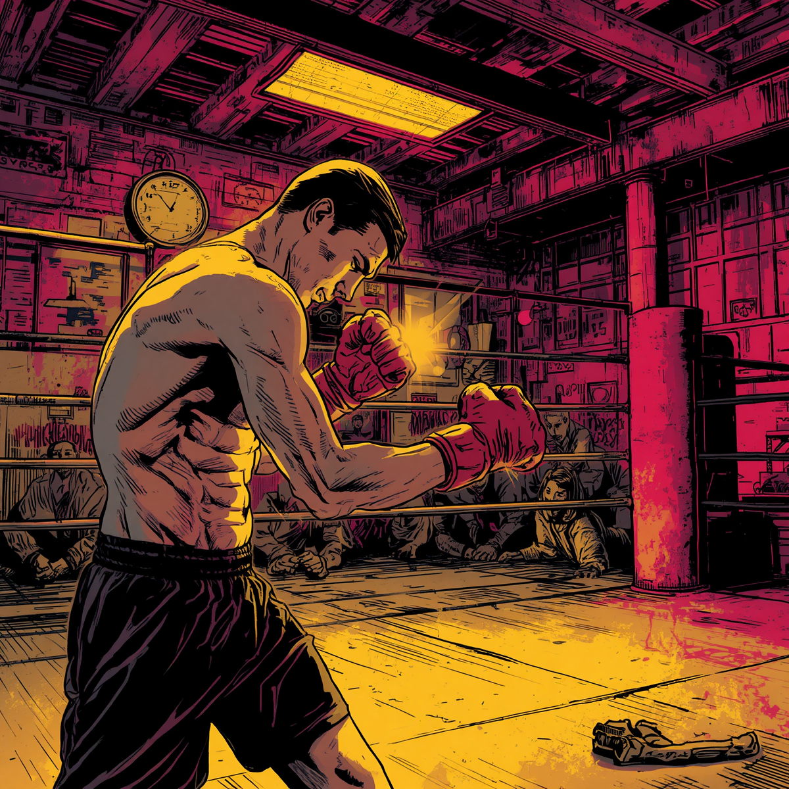
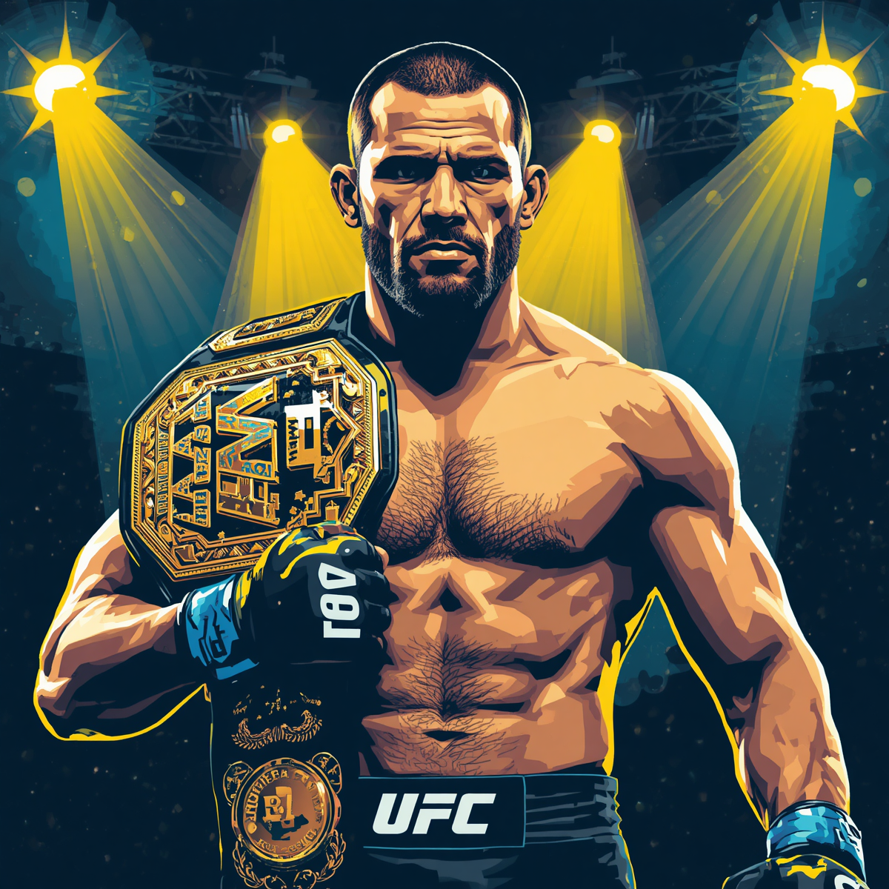

1. A Origem do Campeão: Da Infância em Curitiba aos Primeiros Passos nas Lutas

Antes de lotar arenas pelo mundo e se tornar uma lenda global, Anderson Silva era apenas um garoto criado pelos tios em Curitiba. Com recursos limitados, sua paixão pelas artes marciais começou cedo: aos 8 anos já treinava Taekwondo e, mais tarde, mergulhou de cabeça no Muay Thai e no Jiu-Jitsu.
A caminhada não foi simples. Antes de viver exclusivamente do esporte, Anderson trabalhou até como atendente de lanchonete. Essa fase moldou não apenas sua técnica afiada, mas também a disciplina e a humildade que o acompanhariam durante toda a carreira. A periferia curitibana foi o verdadeiro berço de onde surgiu um dos atletas mais dominantes da história.
2. A Era de Ouro no UFC: O Reinado Histórico nos Pesos-Médios

Quando Anderson Silva estreou no UFC em 2006, poucos previam o tamanho da revolução que estava por vir. Em sua segunda luta na organização, ele nocauteou Rich Franklin e conquistou o cinturão dos pesos-médios. O que se seguiu depois foi simplesmente lendário.
O "Spider" manteve o título por incríveis 2.457 dias consecutivos, defendendo seu cinturão com sucesso por 10 vezes seguidas — um recorde que durou anos. Durante essa era de ouro, Anderson não apenas vencia seus adversários; ele parecia jogar em outra dimensão, transformando o octógono em um palco de espetáculo onde parecia intocável.
5. A Força Mental no Esporte: Como Lidar com a Pressão e as Lesões
Ser um campeão dominante exige muito mais do que preparo físico; exige uma mente blindada. Anderson Silva sempre se destacou pela inteligência emocional no octógono, mantendo a calma em momentos de extrema pressão. No entanto, o verdadeiro teste de sua força mental veio em 2013.
Após sofrer uma das lesões mais chocantes da história do esporte — fraturando a perna ao ter um chute bloqueado —, muitos decretaram o fim de sua carreira. Em vez de desistir, o lutador encarou meses de fisioterapia dolorosa e um longo processo de reabilitação. Sua volta por cima provou que sua maior virtude não era apenas a esquiva perfeita, mas a capacidade de se levantar após as piores quedas.
7. O Impacto Cultural e o Legado para o MMA Brasileiro
O impacto de Anderson Silva vai muito além das estatísticas de vitórias. Nos anos 2000, o MMA ainda era um esporte de nicho no Brasil, visto por muitos com preconceito. Com seu carisma, estilo plástico e vitórias avassaladoras, o Spider furou a bolha e trouxe as lutas para a grande mídia.
Ele transformou o UFC em pauta nos programas de TV, atraiu grandes patrocinadores e inspirou uma nova geração de atletas brasileiros a seguirem o caminho das artes marciais. Graças ao seu sucesso, o Brasil se consolidou como uma das maiores potências do MMA mundial, deixando um legado que continua vivo até hoje.